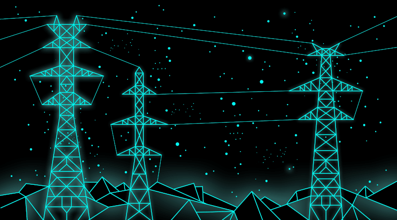

Projects

DEEP LEARNING / COMPUTER VISION
Pedestrian Classifier for Intelligent Vehicles
Comparing different models for pedestrian classification using real-world data.
Jan 29, 2025
CFD / TURBOMACHINERY
CFD Optimization for Hydrogen Turbines
Used Ansys Fluent to enhance Pelton-like turbine efficiency for a hydrogen engine.
Jan 7, 2025

MACHINE LEARNING
Neural Networks for Electrical Systems
Predict demand-supply compensation of power grids through FNNs and GNNs.
Dec 18, 2024Publications
Massimo Perfetti (2025). Machine Learning for Systems and Control: Residual Neural Network Dubins Dynamics Motion Planning. TU Delft Project.
Massimo Perfetti (2025). Personal Website Development. Personal Project.
Massimo Perfetti, Pasquale De Lucia (2025). Physics-informed FNNs and GNNs for predicting Electrical Systems. TU Delft Project.
Massimo Perfetti (2024). Impact of material change on thermo-structural behaviour of F-class gas turbine discs. Bachelor's Thesis.
Contact
Feel free to reach out!
 LinkedIn
LinkedIn